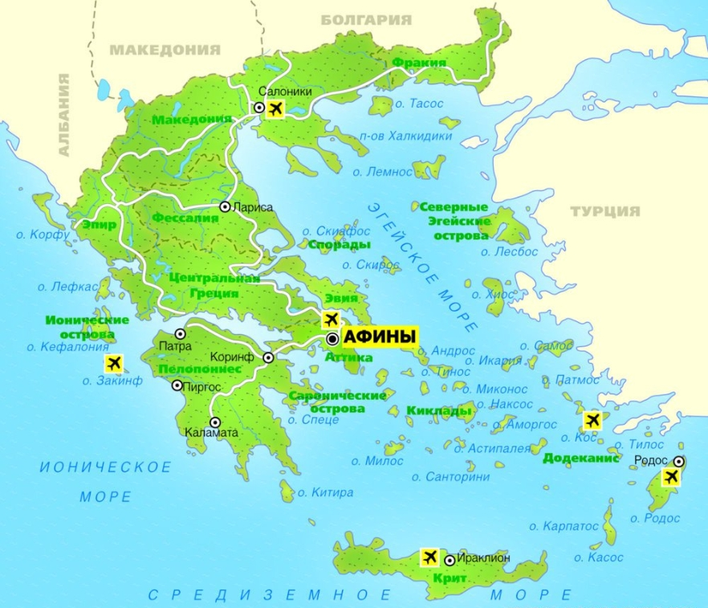

Вставка изображений в HTML-документ
Греция
Греция находится в Южной Европе и занимает южную часть Балканского полуострова.
Территория страны делится на материковую часть, полуостров Пелопоннес и острова в Эгейском море (крупнейшие — Крит, Лесбос, Эвбея).


Рельеф страны представляет собой чередование гористой местности и безлесых выровненных участков, живописных плодородных долин, мелких бухт, заливов, островных территорий, карстовых воронок и пещер в западной части Греции.
Создание изображения в качестве карты
